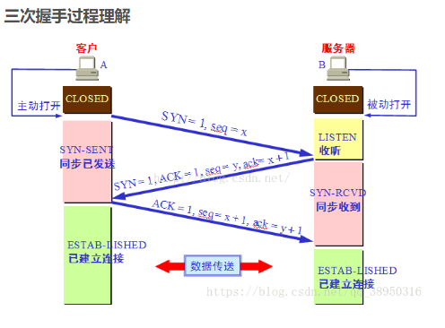

答：因为当Server端收到Client端的SYN连接请求报文后，可以直接发送SYN+ACK报文。其中ACK报文是用来应答的，SYN报文是用来同步的。但是关闭连接时，当Server端收到FIN报文时，很可能并不会立即关闭SOCKET，所以只能先回复一个ACK报文，告诉Client端，"你发的FIN报文我收到了"。只有等到我Server端所有的报文都发送完了，我才能发送FIN报文，因此不能一起发送。故需要四步握手。 
答：虽然按道理，四个报文都发送完毕，我们可以直接进入CLOSE状态了，但是我们必须假象网络是不可靠的，有可以最后一个ACK丢失。所以TIME_WAIT状态就是用来重发可能丢失的ACK报文。在Client发送出最后的ACK回复，但该ACK可能丢失。Server如果没有收到ACK，将不断重复发送FIN片段。所以Client不能立即关闭，它必须确认Server接收到了该ACK。Client会在发送出ACK之后进入到TIME_WAIT状态。Client会设置一个计时器，等待2MSL的时间。如果在该时间内再次收到FIN，那么Client会重发ACK并再次等待2MSL。所谓的2MSL是两倍的MSL(Maximum Segment Lifetime)。MSL指一个片段在网络中最大的存活时间，2MSL就是一个发送和一个回复所需的最大时间。如果直到2MSL，Client都没有再次收到FIN，那么Client推断ACK已经被成功接收，则结束TCP连接。
答：3次握手完成两个重要的功能，既要双方做好发送数据的准备工作(双方都知道彼此已准备好)，也要允许双方就初始序列号进行协商，这个序列号在握手过程中被发送和确认。
现在把三次握手改成仅需要两次握手，死锁是可能发生的。作为例子，考虑计算机S和C之间的通信，假定C给S发送一个连接请求分组，S收到了这个分组，并发 送了确认应答分组。按照两次握手的协定，S认为连接已经成功地建立了，可以开始发送数据分组。可是，C在S的应答分组在传输中被丢失的情况下，将不知道S 是否已准备好，不知道S建立什么样的序列号，C甚至怀疑S是否收到自己的连接请求分组。在这种情况下，C认为连接还未建立成功，将忽略S发来的任何数据分 组，只等待连接确认应答分组。而S在发出的分组超时后，重复发送同样的分组。这样就形成了死锁。
TCP还设有一个保活计时器，显然，客户端如果出现故障，服务器不能一直等下去，白白浪费资源。服务器每收到一次客户端的请求后都会重新复位这个计时器，时间通常是设置为2小时，若两小时还没有收到客户端的任何数据，服务器就会发送一个探测报文段，以后每隔75秒钟发送一次。若一连发送10个探测报文仍然没反应，服务器就认为客户端出了故障，接着就关闭连接。
由于main函数不能被其它函数调用， 因此不可能在程序内部取得实际值。那么，在何处把实参值赋予main函数的形参呢? 实际上,main函数的参数值是从操作系统命令行上获得的。当我们要运行一个可执行文件时，在DOS提示符下键入文件名，再输入实际参数即可把这些实参传送到main的形参中去。argc参数表示了命令行中参数的个数(注意：文件名本身也算一个参数)，argc的值是在输入命令行时由系统按实际参数的个数自动赋予的。argv存放的是每一个参数的首地址。
ssize_t、size_t和int类型的区别？size_t是一些C/C++标准在stddef.h中定义的。这个类型足以用来表示对象的大小。size_t的真实类型与操作系统有关。
在32位架构中被普遍定义为：
typedef unsigned int size_t;
而在64位架构中被定义为：
typedef unsigned long size_t;
ssize_t是有符号整型，在32位机器上等同与int，在64位机器上等同与long int。
size_t一般用来表示一种计数，比如有多少东西被拷贝等。例如：sizeof操作符的结果类型是size_t，该类型保证能容纳实现所建立的最大对象的字节大小。 它的意义大致是“适于计量内存中可容纳的数据项目个数的无符号整数类型”。所以，它在数组下标和内存管理函数之类的地方广泛使用。
而ssize_t这个数据类型用来表示可以被执行读写操作的数据块的大小.它和size_t类似,3但必需是signed.意即：它表示的是signed size_t类型的。
1、属性：new/delete是c++的关键字，需要编译器支持。
2、参数：使用new操作符申请内存分配时无须指定内存块的大小，编译器会根据类型信息自行计算。而malloc则需要显式地指出所需内存的尺寸。
3、返回类型：new操作符内存分配成功时返回的是对象类型的指针，类型严格与对象匹配，无须进行类型转换，故new是符合类型安全性的操作符。而malloc内存分配成功则是返回void*
需要通过强制类型转换将void*指针转成我们需要的类型。
4、分配失败：new内存分配失败时，会抛出bad_alloc异常。malloc分配内存失败时返回NULL。
5、自定义类型：new会先调用operator new函数，申请足够的内存（通常底层使用malloc实现）。然后调用类型的构造函数，初始化成员变量，最后返回自定义类型的指针。
delete先调用析构函数，然后调用operator delete函数释放内存（通常底层使用free实现）。
malloc/free是库函数，只能动态的申请和释放内存，无法强制要求其做自定义类型对象构造和析构工作。
6、重载：c++允许重载new/delete操作符，特别的布局new的就不需要为对象分配内存，而是指定义了一个地址作为内存起始区域，new在这段内存上为对象调用构造函数完成初始化工作，并返回此地址。而malloc不允许重载。
7、内存区域：new操作符从自由存储区上为对象动态分配内存空间，而malloc函数从堆上动态订台分配内存。自由存储区是c++基于new操作符的一个抽象概念，凡是通过new操作符进行内存申请，该内存即为自由存储区。而堆是操作系统中的术语，是操作系统所维护的一块特殊的内存，用于程序的内存动态分配，c语言使用malloc从堆上分配内存，使用free释放已分配的对应内存。自由光存储区不等于堆，布局new就可以不位于堆中。
#ifndef的方式依赖于宏名字不能冲突，这不光可以保证同一个文件不会被包含多次，也能保证内容完全相同的两个文件不会被不小心同时包含。当然，缺点就是如果不同头文件的宏名不小心“撞车”，可能就会导致头文件明明存在，编译器却硬说找不到声明的状况。
#pragma once则由编译器提供保证：同一个文件不会被编译多次。注意这里所说的“同一个文件”是指物理上的一个文件，而不是指内容相同的两个文件。带来的好处是，你不必再费劲想个宏名了，当然也就不会出现宏名碰撞引发的奇怪问题。对应的缺点就是如果某个头文件有多份拷贝，本方法不能保证他们不被重复包含。当然，相比宏名碰撞引发的“找不到声明”的问题，重复包含更容易被发现并修正。方式一由语言支持所以移植性好，方式二 可以避免名字冲突。
全局变量(外部变量)的说明之前再冠以static 就构成了静态的全局变量。全局变量本身就是静态存储方式， 静态全局变量当然也是静态存储方式。 这两者在存储方式上并无不同。这两者的区别在于非静态全局变量的作用域是整个源程序， 当一个源程序由多个源文件组成时，非静态的全局变量在各个源文件中都是有效的。 而静态全局变量则限制了其作用域， 即只在定义该变量的源文件内有效， 在同一源程序的其它源文件中不能使用它。由于静态全局变量的作用域局限于一个源文件内，只能为该源文件内的函数公用，因此可以避免在其它源文件中引起错误。
首先为什么需要引入这四种转换？
因为在c语言中，类型转换格式比较简单，它可以在任意类型之间转换，例如：把一个指向const对象的指针转换成指向非const对象的指针，而这两种转换之间的差别是巨大的，但是传统的c语言没有区分这些，所以c++引入了四个新的类型转换。
1、const_cast
用于将const转换为非const
2、staticcast
用于各种隐式转换，比如非const转const，void*转指针等，staticcast能够用于多态向上转化，如果向下转能成功
3、dynamiccast
4、reinterpretcast
1、指针有自己的一块空间，而引用只是一个别名；
2、使用sizeof看一个指针的大小是4（32位系统），而引用则是被引用对象的大小；
3、指针可以被初始化为NULL，而引用必须被初始化且必须是一个已有对象的引用；
4、作为参数传递时，指针需要被解引用才可以对对象进行操作，而直接对引用的修改都会改变引用所指向的对象；
5、可以有const指针，但是没有const引用；
6、指针在使用中可以指向其他对象，但是引用只能是一个对象的引用，不能被改变；
7、指针可以有多级指针，而引用止于一级；
8、指针和引用使用++运算符的意义不一样；
9、如果返回动态内存分配的对象或者内存，必须使用指针，引用可能引起内存泄漏。
将可能会被继承的父类的析构函数设置为虚函数，可以保证当我们new一个子类，然后使用基类指针指向该子类对象，释放基类指针时可以释放掉子类的空间，防止内存泄漏。
c++默认的析构函数不是虚函数是因为虚函数需要额外的虚函数表和虚表指针，占用额外的内存。而对于不会被继承，的类来说，其析构函数如果是虚函数，就会浪费内存。因此c++默认的析构函数不是虚函数，而是只有当需要当作父类时，设置为虚函数。
静态函数在编译的时候就已经确定运行时机，虚函数在运行的时候动态绑定。虚函数因为用了虚函数表机制，调用的时候会增加一次内存开销。
多态的实现主要分为静态多态和动态多态，静态多态主要是重载，在编译的时候就已经确定；东态多态是用虚函数机制实现的，在运行期间动态绑定。举个例子：一个父类类型的指针指向一个子类对象的时候，使用父类的指针指向一个类对象时候，使用父的指针去调用子类中重写了的父类中的虚函数的时候，会调用子类重写过后的函数，在父类中声明为加了virtual关键字的函数，在子类中重写时候不 加virtual也是虚函数。
虚函数的实现：在有虚函数的类中，类的最开始部分是一个虚函数表的指针，这个指针指向一个虚函数表，表中存放了虚函数的地址，实际的虚函数在代码段（.text）中。当子类继承父类的时候也会继承其虚函数表，当子类重写父类中虚函数时候，会将其继承到的虚函数表中的地址替换为重新写的函数地址。使用了虚函数，会增加访问内存开销。
.栈内存：可以保存对象的名称（保存，访问堆内存的地址） .堆内存：保存每个对象的具体属性 .全局数据区：保存static类型的属性 .全局代码区：保存所有方法的定义
https://blog.csdn.net/qq_29621351/article/details/81948850
pthread_detach()和pthread_join()就是控制子线程回收资源的两种不同的方式。同一进程间的线程具有共享和独立的资源，其中共享的资源有堆、全局变量、静态变量、文件等公用资源。而独享的资源有栈和寄存器，这两种方式就是决定子线程结束时如何回收独享的资源。
pthread_detach()即主线程与子线程分离，两者相互不干涉，子线程结束同时子线程的资源自动回收。pthread_join()即是子线程合入主线程，主线程会一直阻塞，直到子线程执行结束，然后回收子线程资源，并继续执行。
https://www.cnblogs.com/liutianci/p/8443372.html
float : 单精度浮点数
double : 双精度浮点数
两者的主要区别如下：
01.在内存中占有的字节数不同
单精度浮点数在机内存占4个字节
双精度浮点数在机内存占8个字节
02.有效数字位数不同
单精度浮点数有效数字8位
双精度浮点数有效数字16位
03.数值取值范围
单精度浮点数的表示范围：-3.40E+38~3.40E+38
双精度浮点数的表示范围：-1.79E+308~-1.79E+308
04.在程序中处理速度不同
一般来说，CPU处理单精度浮点数的速度比处理双精度浮点数快
如果不声明，默认小数为double类型，所以如果要用float的话，必须进行强转
例如：float a=1.3; 会编译报错，正确的写法 float a = (float)1.3;或者float a = 1.3f;（f或F都可以不区分大小写）
注意：float是8位有效数字，第7位数字将会四舍五入
面试题：
1.java中3*0.1==0.3将会返回什么？true还是false？
fale,因为浮点数不能完全精确的表示出来，一般会损失精度。
2.java中float f = 3.4;是否正确？
不正确，3.4是双精度数，将双精度型（double）赋值给浮点型（float）属于向下转型会造 成精度损失，因此需要强制类型转换float f = (float)3.4;或者写成 float f = 3.4f;才可以。
答：因为当Server端收到Client端的SYN连接请求报文后，可以直接发送SYN+ACK报文。其中ACK报文是用来应答的，SYN报文是用来同步的。但是关闭连接时，当Server端收到FIN报文时，很可能并不会立即关闭SOCKET，所以只能先回复一个ACK报文，告诉Client端，"你发的FIN报文我收到了"。只有等到我Server端所有的报文都发送完了，我才能发送FIN报文，因此不能一起发送。故需要四步握手。
答：由于switch的几个case语句在同一个作用域（因为case 语句只是标签，它们共属于一个swtich语句块），所以如果在某个case下面声明变量的话，对象的作用域是在俩个花括号之间 也就是整个switch语句，其他的case语句也能看到，这样的话就可能导致错误。我们可以通过在case后面的语句加上大括号处理，之所以加大括号就是为了明确我们声明的变量的作用域，就是仅仅在本case之中，其实为了更规范的写switch-case语句，我们应该在case语句后边加大括号。
Git解决了版本控制方面的很多问题，但最核心的是它很好的解决了版本状态存储（即文件变更过程存储）的问题。 Git能够存储的对象类型：blob对象、tree对象、commit对象。 blob对象对应文件内容，tree对象对应文件的目录和节点，commit对象记录时间、提交用户、这个新版本的父版本等信息。